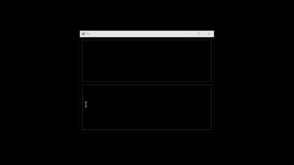

Welcome to the PD wiki!
PD v1.3.4
Keyboard assist
Input: A-Z, 0-9, Insert (PD > input)
Contact: @dnaspiderBasic examples: (modes)
* Press RCtrl then type test for output Hi! «test-»Hi! * Type welc somewhere to output ome (SettingCodeLength: 4) welcome«:{left 2}+{left 2}» * Press RCtrl then type t1 to output `Goodbye` «t1»Goodbye * Connect - Press RCtrl then type t2 for output «t2»«t1»«ctrl»a«-ctrl» * Administrator pd.exe Properties > Compatibility > Run this program as an administratorInterface commands:
Escape: Stop H + Escape: Toggle visibility Double click: Toggle (if SettingBackgroundImage has value) Ctrl + Double click: Center ⚠Scroll lock caution: Hold Escape & press Scroll Lock again to unlock loop ex. «v-»🗽List box commands:
Delete: Remove item Ctrl + E: Edit Ctrl + V: Add clipboardText box commands:
Ctrl + S: Save Ctrl + E: Edit Ctrl + U: Update Ctrl + F: Find Ctrl + Z: Undo Ctrl + Y: Redo Double click or Tab: Print «» F4: Clear F5: Test selected text or full textSplitter command:
Right click: Toggle select«» Code list (output)
«'comments» «time» Copy current time to clipboard «Time» Print current time «time:» Replace : with value ex. «time:\» «date» Copy current date to clipboard «Date» Print current date «date:» Replace forward slashes with value ex. «date:-» «:» Sendkeys. Example: «:test+{left 4}» «<<» Print open code bracket (SettingBracketOpen) «>>» Print close bracket «iw»«-iw» Ignore white space («iw + Tab») «cb:» Copy clipboard value. ex. «cb:test» «sleep:» Pause program x ms, Esc to stop ex. «sleep:1000» (sleep 1 second) «Sleep:» Pause program x milliseconds «,» Sleep 77ms or «,:» ex. «,:1777» «minute:» Pause program x minutes, Esc to stop «to:» Timeout ex. «to:1000» Timeout 1 second, press Escape to stop «app:» App activate. ex. «app:PD» (15 second offset) Escape to stop «App:» App activate «win»«-win» Auto complete: «w + Tab» «shift»«-shift» (press shift, release ex. «shift»«up»«-shift») «alt»«-alt» «ctrl»«-ctrl» «up» «right» «down» «left» «tab» «space» «enter» «menu» «bs» or «backspace» «esc» or «escape» «home» «end» «pu» page up «pd» page down «insert» «delete» «f1» F1-F12 ex. «f4» «n0» Number Pad 0-9 ex. «n3» «pause» or «break» «ps» or «printscreen» «nl» Number lock «sl» Scroll lock «MediaStop» «MediaPlayPause» «MediaNextTrack» «MediaPreviousTrack» «SelectMedia» «vu» volume up «vd» volume down «vm» volume mute «lb» Left button «rb» Right button «mb» Middle button «lc» Left click «lh» Left hold «lr» Left release «mc» Middle click «mh» Middle hold «mr» Middle release «rc» Right click «rh» Right hold «rr» Right release «rp» Return pointer or «rm» «xy» Get pointer x y ( «xy + Tab» ) ex. «xy:0-0» «x:» Move pointer x ex. «x:100» (right 100px) «y:» Move pointer y ex. «y:-100» «audio:» Play .wav file ex. «audio:C:\Users\..\sound.wav» «Audio:» Play .wav and wait to complete «stop-audio» «yesno:» Verify ex. «yesno:Continue?» «replace:that|this» (edit clipboard value)Master Settings:
C:\Users\..\AppData\Local\pd\..\..\user.config Edit user.config to customize Delete pd folder to resetUser.config
Adjust this value below if using mode two from above `welc` and would like more input values like `welco` (5) SettingCodeLength 3 (Right Ctrl key) SettingSpecialKey 163 (PD > ) SettingTitleTip True (Ignore mode # two) SettingBracketModeOnlyScan False (Frequency) SettingInterval 150 SettingInfiniteLoop False (Interface) SettingDarkMode True SettingDarkModeText Lime SettingTopMost False (1 for no opacity) SettingOpacity 0.9 (Auto saved values when closed) SettingHeight 268 SettingWidth 300 SettingLocationTop 118 SettingLocationLeft 78 SettingTextBox Text SettingListboxSelectedIndex -1 SettingTabIndex 0 SettingSelectionStart 0 SettingSelectionLength 0 SettingTextBoxZoomFactor 1 SettingListBoxFontSize 8.25 SettingSplitterDistance 95 SettingSplitterWidth 15 (v1.0.0) SettingSendkeysOnlyMode False Customize SettingBracketOpen « SettingBracketClose » SettingBackgroundImage <value>C:\Users\..\Desktop\..jpg</value>